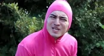
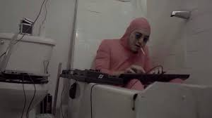

Pink Guy (nome real; Freygarður Geirtryggur Þjóðleifur Lúthersdóttir) é uma entidade de Lycra que vive no universo de Filthy Frank . Ele é um dos três primeiros Lycra criados, sendo os outros Red Dick e Chin-Chin . Ele serve como o deuteragonista do show. Ele também aparece no livro Francis of the Filth. Pink Guy é um músico incrível tocando em muitos gêneros. Desde as batidas de hip-hop de músicas como “Pink Guy Cooks Ramen And Raps” e “Rice Balls”, a músicas country como “White is Right”, a alegres canções de ukulele como “Anal Beads” e “Help”. O destino de Pink Guy é desconhecido, já que TVFilthyFrank terminou em uma nota inconclusiva, ele sendo visto pela última vez se preparando para a batalha enquanto Frank promovia seu romance bíblico, Francis of the Filth .
Pink Guy entrou na vida de Frank quando a dimensão original de Frank em Okinawa desapareceu, como Frank estava no reino das trevas, Pink Guy apareceu diante dele como um mensageiro de uma entidade desconhecida e conta a ele tudo sobre os Lordes da Paz e Chin-Chin . revelado no livro, Francis of the Filth , Pink Guy não poderia escapar daquele reino, pois ele não pode gerar cromossomos naquele reino, Frank faz Pink Guy vir com ele, Frank foi para as coordenadas que Pink Guy deu e foi para um reino onde eles estavam seguros por um tempo. Em seu tempo em Grasslands Realm, ele lançou um álbum de suas músicas incrivelmente retardadas, compiladas em Pink Season .
Seu nome verdadeiro, Freygarður Geirtryggur Þjóðleifur Lúthersdóttir , soa e parece um rabisco completo. Não se sabe por que e de onde ele obteve esse nome, mas há uma teoria de que ele recebeu esse nome de The Joten, no qual acredita-se que sejam seus pais biológicos, pois essa mesma teoria sugere que Pink Guy, Chin-Chin e Red Dick são todos os três irmãos, pois são os três primeiros lycras a serem criados no Omniverse. Acredita-se que o texto usado para escrever seu nome seja na verdade escrito na língua nativa Joten ou na língua nativa Lycra, na qual ambas são inexistentes para os humanos. Parece que essas duas línguas estão desaparecendo lentamente, à medida que a diáspora da Lycra está ficando cada vez maior ao longo do tempo, sugerindo que há pouca ou nenhuma lycra que realmente sabe falar a língua. Isso significaria que o próprio Pink Guy nem sabe seu nome verdadeiro, o que significa que ele está mais familiarizado com o nome Pink Guy.
Fala Pink Guy
Embora cuspindo coisas sem sentido e tendo um problema de fala, Pink Guy tem uma habilidade surpreendente no rap. No entanto, enquanto ele pode estar pegando uma garota gostosa, para outros, como Filthy Frank, ele ainda aparece como se estivesse apenas soltando sons estranhos e parece estar fazendo coisas aleatórias, como balançar um pau ou bater em coisas. Pink Guy aparentemente possui a capacidade de falar japonês e inglês, no entanto, em todas as ocasiões, falar inglês parece exigir um grande esforço para ele e muitas vezes só é feito sob estresse emocional extremo ou confiança. As explosões incoerentes típicas de Pink Guy podem, no entanto, ocasionalmente ser entendidas por outros, como Filthy Frank ou seu inimigo/ex-relacionamento lésbico Green Cunt .
Em uma de suas faixas de seu álbum, FF and the Crew , Pink Guy é apresentado por Frank. Em vez de 'rap', Pink lidera com uma longa introdução japonesa. É arrastado, ilegível e tem referências a termos cunhados em inglês (Síndrome de Down) sem equivalência em japonês. Pink Guy aparentemente tem uma convulsão com Filthy Frank tentando confortá-lo.
Após esta convulsão, ele transita para sua personalidade usual de 'rap' e até usa um lamento que Red Dick] é conhecido por executar, que soa como um "AHHHHHHH!". Isso sugere como para os outros, Pink Guy fala de forma insana e incoerente, mas em sua própria mente, ele tem uma fala perfeita: isso também é demonstrado em muitos outros segmentos do The Filthy Frank Show .
No livro, Francis of The Filth, quando ele se encontra pela primeira vez com Frank no reino das trevas, diz-se que ele tem uma bela voz naquele reino.
Habilidades e poderes
Embora ele tenha câncer, depressão, vício em buceta, disfunção erétil, transtorno de masturbação crônica, seja completamente autista e retardado, Pink Guy possui algumas habilidades especiais. Ele é um ótimo dançarino de break, como mostrado em seu vídeo "WELCOME TO JAPAN". Ele mostrou alguma habilidade em combate e é capaz de convocar São Nicolau quando necessário para derrotar seus oponentes, como aprendemos no especial de Natal. Ele também parece ser capaz de viajar pelos reinos com sua furtividade rosa.
Ele também é muito habilidoso com armas de fogo, como visto em O Filho Maligno de Hitler, pois ele foi capaz de lutar contra o Nazi Cunt ao lado de Derek enquanto em seu tempo à deriva no carro Pink Stealth .
Pink guy também possui a habilidade de vomitar ovos como visto no final de "PINK GUY COOKS FRIED RICE AND RAPS", junto com vomitar feijão enlatado como visto em "THE TODO PODEROSO PINK GUY", onde ele vomita alguns no rosto de Frank, semelhante ao poder de Dade de vomitar chocolate.
Pink Guy também pode disparar um laser rosa de sua bunda, como visto na batalha contra Evil Dade .
Outras Informações

Pink Guy tem derme rosa Lycra cobrindo a maior parte de seu corpo, e seus genitais parecem consistir de uma banana de borracha como visto em "Filthy Compilation" e "PEOPLE I HATE" . Ele também parece ter um problema de fala e fala em claptrap, no entanto, ele consegue se comunicar com Red Dick bem como visto em "ROCHA PAPEL TESOURA...?" . Pink Guy tem pouco ou nenhum medo do que as pessoas ao seu redor pensam dele, como demonstrado por suas frequentes atividades humilhantes realizadas no Japão e em outros lugares. Também é notável que Pink Guy é frequentemente visto com Red Dick, e está implícito que eles são melhores amigos dentro do universo Filthy Frank. Pink Guy também parece ter um amor (e uma possível obsessão por) pusi . Dito isto, ele é conhecido por tertocou um Willy no ensino médio uma vez, mas ele jura que foi apenas um pequeno erro . Ele é provavelmente satanista Just Ask Filthy Frank #3 (ABORTOS & GINGERS) . Ele provavelmente pode dar à luz como podemos ver em Just Ask Filthy Frank #2 . Ele gosta de dançar no tempo livre. Especula-se que Pink Guy pode ter sido acometido de depressão enquanto The Real Frank está pulando de dimensão em dimensão fugindo dos senhores da paz com o resto de seus amigos, por causa desse isolamento Pink Guy se pergunta se o Verdadeiro Frank ainda se importa com Pink Cara mais. Então ele só tem o Falso Frank para confortá-lo. (Veja MACARRÃO FRITO ). Pink Guy possui um dos dois únicos veículos à deriva no tempo, chamado Pink Stealth, sendo o outro o Veículo de Viagem no Tempo Nazista. É destaque na capa de seu álbum Pink Season .
É teorizado que Pink Guy foi profetizado para se tornar o ser mais poderoso do universo e destruí-lo, mostrado em Pink Season: The Prophecy . Ao realizar seu destino, descobriu que amava o mundo e não queria destruí-lo, no medo de seu destino se suicidou. Depois de se matar, ele foi transportado para o inferno, onde é forçado a lutar contra os demônios dentro de si. Depois de derrotar seus demônios internos, ele canta um remix de STFU em um ato de desafio à sua profecia e possível influência de Chin-Chin, dizendo ao seu destino que cale a boca. Mais tarde, ele é mostrado comendo bolinhos de massa de forma agressiva, mostrando sua futura carreira, atividades e futuro com Filthy Frank]. No entanto, tudo isso é apenas especulação e provavelmente não é verdade ou nunca foi mencionado novamente em vídeos de histórias posteriores.
Grandes Batalhas

Lutas
Resultado
Pink Guy vs Orange
Vitória
Pink Guy vs. Soap Bottle
Vitória
Pink Guy vs. Prometheus
Derrota
Filthy Frank , Pink Guy, Salamander Man, Lemon e Lil B vs. Mr. Magic Man
Vitória com a ajuda de Lil B
Pink Guy vs. Lemon
Vitória
Filthy Frank e Pink Guy vs. Almond Titties e Steve Buscemi
Imterrompido
Filthy Frank e Pink Guy vs Winnie the Pooh e Banana
Derrota
Filthy Frank, Pink Guy e Salamander Man vs. PolitikZ
Vitória
Pink Guy vs. Green Cunt
Salvo por Salamander Man
Pink Guy e Saint Nicholas vs. The Tap Brothers
Vitória com a ajuda de São Nicolau
Chin Chin, Tap Brother , Fake Frank e Unknown Red Teletubby Entity vs. Filthy Frank, Pink Guy, Roast Lord e ET
Vitória
Pink Guy e Derek vs. Nazi Cunt
Vitória com a ajuda de Derek
Pink Guy, Filthy Frank, Speed Lord e Dade vs. Evil Dade

.jpg)